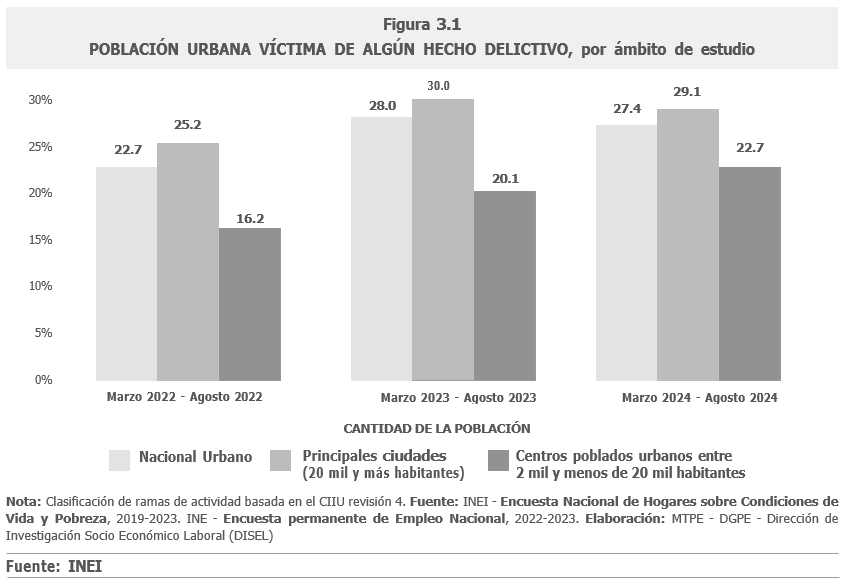
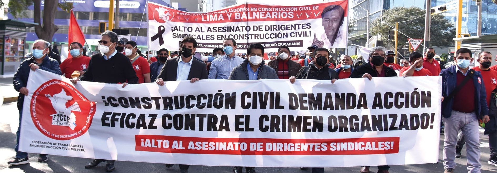

6 PARTE 3: VIOLENCIA EN OBRAS DE CONSTRUCCIÓN
Uno de los mayores retos que han venido enfrentando de manera conjunta la FTCCP y CAPECO, sobre todo desde el final de la primera década de este siglo, ha sido combatir la violencia delincuencial llevada a cabo por organizaciones criminales disfrazadas de sindicatos, expresada en extorsiones y asesinatos, que han cobrado la vida de obreros, profesionales, dirigentes y empresarios y que han extendido su accionar delictivo a otras actividades que afectan a la ciudadanía en general.
6.1 INSEGURIDAD CIUDADANA
Durante los últimos años se ha hecho muy poco para combatir la actividad delictiva, dejándola crecer y consolidarse e incluso infiltrase en instituciones gubernamentales y estatales; razón por la cual la inseguridad ciudadana se ha convertido en uno de los más urgentes e importantes problemas nacionales ya que no existe ámbito territorial ni actividad económica, grande o pequeña, que se encuentre libre de ella.
La delincuencia y la inseguridad ciudadana han alcanzado niveles críticos, en los principales centros urbanos del país, a punto tal que según varias investigaciones sociales y de opinión pública, se ha convertido en la principal preocupación de quienes residen en ellos.
Según el Informe de Estadísticas de Seguridad Ciudadana que elabora anualmente el Instituto Nacional de Estadística e Informática-INEI, en el semestre marzo-agosto 2024, a nivel nacional urbano, el 27.4% de la población de 15 a más años de edad ha sido víctima de algún hecho delictivo. Pero, la incidencia en las principales ciudades de veinte mil a más habitantes alcanzó el 29.1%, en tanto que, en los centros poblados urbanos entre dos mil y menos de veinte mil habitantes fue de 22.7%. (Figura 3.1).

En la ciudad de Lima, la prevalencia de victimización es de 29.9%, porcentaje que es un tanto mayor al registrado en los centros poblados urbanos de más de 150 mil habitantes donde alcanzaron el 29.6%. En la Provincia Constitucional del Callao y en los centros poblados de 50 mil a 150 mil habitantes, se situó en 25.2% y 24.9%, respectivamente.
Las amenazas, intimidaciones y extorsiones afectan a 2 de cada 100 personas en las áreas urbanas. El 9.2% de la población de 15 a más años de edad declara haber sido víctima de algún hecho delictivo cometido con arma de fuego. En las principales ciudades de 20 mil a más habitantes, esta proporción alcanzó el 9.9%. El 85.9% de la población que reside en las zonas urbanas, además, percibía que puede ser víctima de algún hecho delictivo en los siguientes doce meses.
Esta situación se ha ido agravando con el tiempo. Así, según el Barómetro de las Américas, en el año 2023, el 58% de los peruanos percibía la falta de seguridad como uno de los grandes problemas del país. El Perú ocupa el tercer lugar, después de Ecuador (64%) y Bolivia (62%), en un estudio realizado en 26 países latinoamericanos. Queda claro que la persistencia de este grave problema social pone en peligro la institucionalidad democrática, como viene ocurriendo en otras naciones de la región. (Figura 3.2).

El crecimiento de la tasa de victimización por delincuencia y de la percepción de inseguridad en la población coincide con el descrédito de las instituciones dedicadas a combatirla. En el 2023, la tasa de victimización por delincuencia, según el Barómetro de las Américas, era de 29% en nuestro país, detrás de Ecuador (36%), Argentina (33%) y Nicaragua (30%).
Es evidente que se ha incrementado la magnitud y la violencia de la delincuencia en las modalidades delictivas como la extorsión y el sicariato y, con ellos, se ha producido el incremento y envilecimiento de la delincuencia juvenil. En gran medida, este escalamiento de la violencia y de la actividad delictiva es atribuible a la proliferación de organizaciones delincuenciales que cuentan con recursos técnicos, humanos, económicos y legales para actuar y que aprovechan las limitaciones logísticas que dificultan una acción eficiente de las fuerzas del orden y la morosidad e imprevisibilidad de la administración de justicia.
En los últimos años, el accionar delictivo se ha extendido a otras actividades como la minería ilegal, el narcotráfico, la trata de personas, el contrabando, la tala indiscriminada de bosques y el tráfico de tierras, generándose economías criminales que dominan partes del territorio nacional, afectando además la estabilidad democrática.
Aunque el accionar de estos grupos delincuenciales afecta a todos los estamentos de la sociedad, sin hacer distingos por condición socioeconómica o lugar de residencia, es también evidente que la actividad empresarial, de todo tamaño, se ha convertido en objetivo recurrente de la delincuencia más violenta y organizada, que antes afectaba a sectores económicos específicos como la construcción civil y la banca, se ha extendido a prácticamente todo tipo de actividades económicas, incluso a las micro y pequeñas empresas, que se encuentran en condición de mayor vulnerabilidad para defenderse de la delincuencia.

Las extorsiones emplean amenazas directas e indirectas contra responsables de obras, funcionarios de empresas constructoras, subcontratistas, proveedores y operadores externos. Estas acciones han generado una grave alteración de la paz laboral, pérdida de vidas y un notable incremento en los costos de construcción, impactando negativamente en el desarrollo del sector.
6.2 VIOLENCIA EN OBRAS
Es evidente que el sector construcción es altamente vulnerable al accionar de estos grupos delincuenciales. En primer lugar, porque en los últimos veinte años la construcción ha crecido sostenidamente y su actividad se ha extendido a buena parte del territorio nacional. En segundo término, porque esta actividad demanda mucha mano de obra no calificada y semicalificada, la que, además, por la naturaleza temporal de las obras de construcción presenta altos niveles de rotación. Por último, las obras de construcción no se desarrollan en centros de producción asentados en lugares determinados por un largo tiempo como en la mayoría de actividades empresariales, sino que se desarrollan en diferentes partes y por un corto tiempo, dificultando las acciones de protección y prevención.
Estas características de la actividad constructora han generado para las bandas organizadas, una oportunidad muy concreta y de bajo riesgo para delinquir. Lo hacen sobre todo a través de seudosindicatos, supuestas asociaciones de pobladores o de trabajadores desempleados, cuyos representantes extorsionan a las empresas constructoras para la contratación de obreros fantasma o a través del pago de “cupos” de seguridad y también a los trabajadores para “garantizarles” la seguridad y el puesto de trabajo . Para defenderse, estos grupos han desarrollado estructuras seudolegales que aprovechan las limitaciones del sistema policial-judicial y que les permiten actuar impunemente.
Con el tiempo, estos seudosindicatos se transformaron en estructuras criminales más complejas y extendieron su actividad a otros rubros. Entre las primeras organizaciones que experimentaron este cambio figuran Los Rucos de Chilca y Los Malditos de Santa Rosa, según el estudio “Alegalidad, redes delictivas y tráfico sistemático de terrenos” (2021) del investigador Nekson Pimentel Sánchez.
Los Rucos de Chilca surgieron a inicios de los años 2000 en Lima y extendieron su influencia al Sur Chico. Liderado por seudodirigentes sindicales, controlaban obras públicas y privadas mediante amenazas, cobros ilegales y manipulación de listas de trabajadores. Diversas investigaciones policiales realizadas entre 2013 y 2018 descubrieron su participación en el tráfico de terrenos y lavado de activos, además de extorsionar a empresarios bajo el pretexto de brindar “seguridad sindical”. Su accionar delictivo se incrementó notablemente, cuando uno de sus miembros fue elegido alcalde distrital de Chilca.
Por su parte, Los Malditos de Santa Rosa aparecieron alrededor de 2010 en el distrito limeño del mismo nombre. El modus operandi era similar al de Los Rucos, pero en este caso el alcalde distrital era el líder de la organización, de la que también formaban parte un juez y efectivos de la Policía Nacional. Entre 2016 y 2018, operativos policiales permitieron la captura de sus principales cabecillas, aunque varios de sus miembros se reagruparon bajo nuevas denominaciones o integraron otras redes criminales del sector construcción.
Organizaciones de este tipo se han extendido en un número creciente de localidades, lo que ha generado el agravamiento de la inseguridad ciudadana, extendiéndola a otras actividades económicas, afectando la confianza entre empresarios, trabajadores, autoridades y ciudadanos. En el sector construcción sus acciones han ocasionado la paralización de proyectos y debilitado la representación sindical legítima.
Las extorsiones implican el uso sistematizado y coordinado de amenazas directas e indirectas a los profesionales responsables de las obras, a funcionarios de las empresas constructoras o promotoras, a sub contratistas, proveedores, e incluso, a los operarios que no forman parte de su organización. Todo ello ha producido una grave afectación de la paz laboral, pérdida de vidas y el incremento de los costos de construcción.
También se ha extendido una forma más sutil de extorsión en la actividad constructora, que es la que ejercen funcionarios municipales al solicitar dinero u otros “beneficios” para el otorgamiento de licencias y otras autorizaciones vinculadas a las obras de habilitación urbana y de edificación.
En la última década se han desarrollado una serie de iniciativas procurando la reducción de este gravísimo problema social, entre las que se pueden mencionar: la implementación del Plan Ladrillo a cargo del Ministerio del Interior el 2005; la creación de la Dirección Nacional de Obras de Protección Civil, en la Policía Nacional del Perú el 2010; la tipificación y mayor sanción a delitos cometidos en banda y, especialmente, los vinculados a obras de construcción civil y la constitución de registros de trabajadores y obras a cargo del Ministerio del Trabajo dispuestos en el Decreto Legistativo 1187 del 2015.
No obstante, como se ha señalado, la incidencia de delitos en las obras de construcción civil no se ha reducido de manera significativa y más bien se han extendido a otras actividades delictivas como el tráfico de tierras, los préstamos ilegales usureros, los negocios inmobiliarios ilegales o la venta de materiales, el lavado de activos, la extorsión a pequeños comerciantes o transportistas o el sicariato por encargo, lo que obliga a repensar la forma en que se ha procurado atender estos problemas.
6.3 COMPROMISO INSTITUCIONAL
En julio del 2016, el Colegio de Arquitectos del Perú (CAP), el Colegio de Ingenieros del Perú (CIP), la Federación y CAPECO conformaron el Consejo Permanente por la Vivienda, la Construcción y el Territorio (CPVCT) con la finalidad de promover la producción formal de viviendas, especialmente las destinadas a familias de bajos ingresos; el desarrollo ordenado de las ciudades, favoreciendo su competitividad y sostenibilidad; la mejora de la calidad de vida y del bienestar general de personas familias y comunidades.
Además, acordaron impulsar el adecuado ordenamiento y gestión del territorio; el perfeccionamiento de las políticas públicas, con el propósito de construir más y mejor infraestructura urbana; el correcto ejercicio profesional de la ingeniería y la arquitectura; así como el empleo formal y la seguridad en las obras de construcción.
Miembros del Consejo Permanente con Jorge Alva Hurtado, del CIP; José Arispe, del CAP; Luis Vilanueva, de la FTCCP; y Francisco Osores y Enrique Espinosa de CAPECO reunidos con el ministro de Vivienda Edmer Trujillo y la viceministra de Vivienda y Urbanismo, Cecilia Lecaros.
Para cumplir con estos propósitos, el Consejo Permanente buscaba promover iniciativas legislativas, normativas y administrativas relativas a la vivienda, la construcción y el desarrollo territorial y una posición de consenso respecto a las políticas públicas emprendidas por los diferentes niveles de gobierno en estas materias.
En ese marco, el Consejo Permanente formuló una Estrategia Integral contra la Violencia en Obras de Construcción, la cual fue presentada en un Foro sobre la Violencia en Obra que tuvo lugar el día 15 de diciembre del 2016 en el Auditorio del SENCICO.
Cabe señalar, además, que el 11 de mayo del 2016, durante la realización del II Foro de Candidatos Presidenciales, el entonces candidato presidencial Pedro Pablo Kuczynski y los representantes de las entidades que conforman el Consejo Permanente suscribieron una Declaración por el crecimiento, la seguridad y los derechos laborales en el sector de la Construcción. En esta Declaración se asumieron varios compromisos, entre los que destacan los siguientes:
“con la seguridad ciudadana, mediante medidas integrales para enfrentar la delincuencia y, especialmente, el problema de la violencia en las obras de construcción”.
“con el rechazo a todo vínculo o reconocimiento a las bandas delincuenciales que operan como falsos sindicatos en el sector construcción”.
6.4 ANTECEDENTES DE LA PROPUESTA
Siendo la creación de la DIVPROC (División de Protección de Obras de Construcción), el esfuerzo más consistente y enfocado hasta hoy, por atender el problema de la violencia en obras de construcción civil, es necesario analizar más detenidamente los resultados alcanzados y las limitaciones detectadas para desarrollar su labor. Hasta antes de la creación de esta unidad especializada de la Policía Nacional del Perú (PNP), primero como División y, desde el año 2014, como Dirección Nacional, las empresas constructoras atendían sus problemas de seguridad de manera independiente, recurriendo a las comisarías cercanas, incrementando su vulnerabilidad frente a los extorsionadores.
Para la puesta en marcha de la DIVPROC, CAPECO celebró un Convenio de Cooperación con el Ministerio del Interior a principios del año 2010, a través del cual un grupo de empresas asociadas a la CAPECO se comprometió a financiar, en calidad de donación, la infraestructura y la logística básica para el funcionamiento de la División. El Ministerio dispuso a su vez el reconocimiento de la DIVPROC como órgano especializado de la PNP, con una estructura organizativa a la que se asignaron inicialmente 100 efectivos. La División empezó a funcionar en febrero del 2010, siendo una de sus primeras tareas, el establecimiento de un protocolo de operación, el cual fue difundido entre las empresas asociadas a través de Talleres de Capacitación. Para la coordinación de las acciones específicas entre la División y las empresas, la Cámara contrató a un alto oficial retirado de la PNP.
La División se estructuró en base a tres departamentos: el de Inteligencia, el de Prevención y el de Investigaciones. En los años siguientes, con el apoyo económico de las empresas constructoras, se fue consolidando la acción de la DIVPROC, extendiéndola a algunas ciudades del interior del país, lo que motivó su transformación en la Dirección Nacional de Protección de Obras Civiles (DIRPOC).
Como se muestra en la Figura 3.3, desde que empezó a operar esta unidad especializada de la PNP, hasta el 2016, se han intervenido a más de 39 mil personas, habiéndose detenido a 2 mil 512 y desarticulado 167 bandas, además de haber incautado un número importante de armas de fuego, municiones, drogas y dinero.

Los logros que se alcanzaron por este modelo de colaboración en el sector construcción, provocó que muchas de las bandas organizadas dirigiesen su acción criminal a otras sectores económicos y sociales. No puede perderse de vista que se trata de organizaciones con recursos para delinquir y que orientan sus prioridades en función del menor riesgo y el mayor beneficio. Las consecuencias son muy graves para la ciudadanía y para la institucionalidad democrática porque los importantes medios económicos que han acumulado les han otorgado poder para cooptar o amenazar alcaldes, jueces, fiscales, policías y a mantener de rehenes a los pobladores que viven entre “los programas habitacionales que promueven”. En buena cuenta, estas organizaciones criminales ejercen un dominio terriotorial en áreas de expansión de los principales centros urbanos del país.
La importante acción efectuada por esta división especializada de la policía, sin embargo, no se vio reflejada en una efectiva sanción a los delincuentes que actuaban en las obras de construcción. Apenas se judicializaron muy pocos casos, lo cual puede atribuirse a varias razones: (a) las dificultades para preparar los atestados por parte del personal policial; (b) la falta de coordinación con el Ministerio Público para procesar las denuncias; (c) las limitaciones del Poder Judicial para procesar oportuna y adecuadamente a los implicados. Todas estas acciones se vieron agravadas porque las bandas delincuenciales cuentan con importantes aparatos legales y operativos que superan a los recursos de las fuerzas del orden encargadas de combatirlas.
La percepción de impunidad no sólo alienta a los delincuentes a continuar con sus acciones, sino que desmotiva a los empresarios, profesionales y trabajadores de obras; así como a los ciudadanos afectados a colaborar con la policía y formalizar las denuncias. Es evidente que los delincuentes no condenados o sancionados con penas leves (entre ellos, los menores de edad) pueden buscar venganza contra quienes los denunciaron.

La acción policial en obras de construcción no ha derivado en sanciones efectivas, con pocos casos judicializados debido a dificultades en la elaboración de atestados, falta de coordinación con el Ministerio Público y limitaciones del Poder Judicial. Este panorama se agrava por el respaldo legal con el que cuentan las bandas delincuenciales.
A estas dificultades detectadas se sumaron otras, como: (a) la supresión del servicio individualizado 24 por 24, que tuvo como consecuencia la desprotección de las obras y, por tanto, el incremento de las extorsiones; (b) la implementación del nuevo Código Procesal Penal donde existe alta incidencia del crimen organizado, al darle más relevancia a la acción fiscal en la investigación, dificultó aún más los procesos de investigación policial; (c) el vencimiento del Convenio de Colaboración suscrito entre el Ministerio del Interior y CAPECO mermó las acciones futuras de la DIRPOC.
Otro factor limitante para el desarrollo de las acciones de esta Dirección, fue la notable diferencia entre sus capacidades operativas y el número de obras a proteger, lo que dificultaba las acciones de prevención e inteligencia. De acuerdo con datos de CAPECO, solamente a nivel nacional, en el año 2016 se encontraban en ejecución casi cinco mil obras de construcción (incluyendo las de edificaciones, obras viales, de saneamiento y otras infraestructuras).
Existían en ese momento entre 1,600 y 2,600 obras en fases iniciales de ejecución, que son aquellas en las que el riesgo de la extorsión es mucho mayor. En Arequipa, Trujillo y Chiclayo –que seguían en importancia a Limael número de obras es aproximadamente la décima
parte de las que se presentan en la capital. Para que la acción preventiva e investigativa de la DIRPOC tuviera impacto efectivo en la lucha contra la delincuencia, hubiera sido indispensable incrementar sus facilidades logísticas y de información. Por el contrario, en el tiempo los recursos asignados a esta dependencia fueron mermando progresivamente.
6.5 ENFOQUE HOLÍSTICO DE LA VIOLENCIA
El enfoque de la propuesta formulada por el Consejo Permanente consideraba que aunque el proceso de represión, investigación, juzgamiento y sanción de las acciones delincuenciales es un factor clave en la lucha contra estas bandas organizadas, no es el único a considerar. La violencia urbana se explica también por razones sociales, económicas y culturales que es necesario considerar para afrontar con éxito su reducción.
Entre estas razones se encuentran las condiciones físicas y sociales degradadas de los barrios en que viven los malhechores y sus familias. Ello genera la reproducción intergeneracional del delito, la falta de oportunidades de empleo honesto, la idealización de la delincuencia como forma de vida y la mayor incorporación de menores de edad a las organizaciones criminales.
Se debe considerar también la interrelación entre las acciones delictivas vinculadas directamente con las obras de construcción y aquellas que desarrollan las bandas organizadas para blanquear sus ingresos ilícitos, bajo apariencia de formalidad, generando estructuras organizativas muy poderosas solventadas por el delito, pero cuyo accionar se dirige a actividades económicas supuestamente legales.
Otra razón de esta situación puede ser la desconfianza de la ciudadanía hacia las instituciones públicas encargadas de combatir el delito, lo que no sólo impide extender una “cultura de la denuncia” sino que, por el contrario, difunde la percepción de su inoperancia y puede promover la convicción de la necesidad de tomar la justicia por propia mano.
Además, el poder de las bandas delincuenciales genera condiciones propicias para la corrupción dentro de las entidades encargadas de combatirlas, lo que, a su vez, aumenta las dificultades para lograr una sanción efectiva contra los delincuentes.
Por otro lado, se observa la tolerancia de la ciudadanía con la corrupción de funcionarios, así como con la comisión de faltas o delitos menores, tales como el pago de pequeñas coimas, la compra de productos robados o “pirateados”, el desacato a las órdenes de las autoridades o incluso la reacción violenta contra ellas, y el no pago de impuestos o multas, etcétera.
A ello se suma el enfoque neutro o incluso amarillista de una parte importante de los medios de comunicación respecto a la delincuencia, el cual favorece la tolerancia de los ciudadanos hacia los delitos y quienes los cometen, generando una falsa percepción acerca de la eficacia de los mecanismos que emplea el Estado para combatirlos. Este enfoque, además, puede llevar a que muchos jóvenes, confundidos, se sientan atraídos por el estilo de vida de los delincuentes, quienes se ufanan de su riqueza y de su impunidad.
Las dificultades existentes para masificar buenas prácticas de seguridad en las obras de construcción civil contribuyen a no solo prevenir accidentes, sino también a reducir el riesgo de violencia en las mismas.
Finalmente, la impunidad con que actúan estas bandas, ha hecho que sus fuerzas de choque incursionen también en la comisión de delitos menores (robos de celulares o vehículos, secuestros al paso, microcomercialización de drogas, entre otros). La estrategia policial se ha ido concentrando progresivamente en estos delitos en lugar de orientarse prioritariamente a perseguir a los cabecillas de las organizaciones criminales, lo que requiere acciones de investigación e inteligencia. Hay que tener en cuenta que tanto los traficantes de droga, los mineros ilegales o los depredadores de bosques, las bandas delincuenciales que se esconden bajo el disfraz de seudosindicatos de construcción son una amenaza para el estado de derecho y la defensa nacional, porque “gobiernan en tierras liberadas en las que no rigen las leyes peruanas sino la imposición de sus líderes”.
6.6 LA PROPUESTA
La propuesta presentada en el año 2017 por el Consejo Permanente para la Implementación de una Estrategia Integral contra la Violencia en Obras de Construcción Civil, contenía una serie de objetivos específicos.
El primero de ellos buscaba contribuir al fortalecimiento de la acción policial de inteligencia, prevención y represión del crimen organizado en construcción civil, mediante inversiones en infraestructura, equipamiento, apoyo logístico y recursos humanos.
Además, se postulaba una mayor coordinación entre la Policía Nacional, el Ministerio Público, el Poder Judicial y las autoridades penitenciarias, con la finalidad de asegurar el máximo rigor en los procesos de investigación, juzgamiento y sanción de las bandas criminales organizadas. Se planteaba formular iniciativas legislativas, normativas y administrativas para facilitar la desarticulación, captura, judicialización y sanción de las organizaciones criminales, así como para empoderar y legitimar a las agencias estatales encargadas de combatirlas.
Dentro de la propuesta se consideraba importante, también, impulsar la coordinación de acciones entre las fuerzas policiales, los servicios de serenazgo municipal y los mecanismos de seguridad privada con que contaban las empresas constructoras. Igualmente, se recomendaba efectuar estudios, eventos de análisis e investigaciones que permitiesen conocer más cabalmente la naturaleza y alcances del delito organizado, así como contar con un Sistema Integrado de Información que hiciese posible medir la eficacia y eficiencia de las acciones previstas dentro del Plan.
Se necesitaba, además, impulsar la recuperación de barrios urbanos degradados, buscando la promoción social y la generación de oportunidades económicas, lo que abría la posibilidad de reducir los condicionantes socio-económicos que facilitan la proliferación de la delincuencia.
Asimismo, se postulaba difundir ante la opinión pública los logros que se fueran alcanzando en la lucha contra el crimen organizado a partir de la aplicación de la estrategia integral; así como las buenas prácticas de seguridad emprendidas a partir de esquemas de colaboración entre instituciones empresariales y sociales. Se buscaba además promover una cultura cívica y una movilización ciudadana para promover la paz social.
Con este propósito, la estrategia se proponía trabajar junto a medios de comunicación masiva con el propósito de difundir una adecuada comprensión de los orígenes, causas y consecuencias de la violencia de construcción civil, diferenciando claramente entre representantes legítimos del sector laboral y quienes promueven la violencia en obra y, en el marco del respeto a la libertad de prensa y expresión, procurar un tratamiento noticioso adecuado y objetivo a las acciones de violencia en obra y demás actos delincuenciales efectuados por estas bandas.
Por otro lado, se pretendía implementar acciones de capacitación y formación entre los diferentes agentes que participan en las obras de construcción, con el fin de extender una cultura de seguridad integral.
La propuesta concentraba la formulación de planes anuales de operación y que, simultaneamente a la formulación del primer plan anual, se debía ejecutar un conjunto de acciones urgentes que servirían como insumos para la formulación del diagnóstico y debían ser incorporadas como “pies forzados” dentro del Plan.
Entre las acciones del plan inicial se incluía, en primer lugar, desarrollar un estudio de base, a partir de la data de inteligencia, prevención, represión, investigación y sanción que poseían en ese momento la DIRPOC, la Dirección General de Inteligencia del Ministerio del Interior y la Dirección de Inteligencia de la PNP, con el propósito de identificar los principales cuellos de botella que afectaban el proceso de combate a la violencia en obra; y proponer las iniciativas operativas, administrativas, normativas o legislativas necesarias para eliminarlos al más breve plazo.
En segundo lugar, se planteaba fortalecer a la DIRPOC para que pudiera incrementar sus acciones de prevención mediante el patrullaje; obtener, analizar y procesar información sobre las bandas de seudo-trabajadores de construcción civil así como de funcionarios públicos que extorsionaban a las empresas constructoras para otorgar licencias y autorizaciones; mejorar sus intervenciones de represión de actos delincuenciales así como la coordinación con el Ministerio Público para perfeccionar la investigación y el encausamiento de los delincuentes capturados. Asimismo, debía aprovecharse la jurisdicción nacional de la DIRPOC, procurando abarcar las ciudades en donde existía mayor actividad de construcción. Ello implicaba asignar un mayor número de efectivos a esta Dirección; incrementar el pool de unidades móviles así como mejorar la cantidad y operatividad del armamento.
En tercer lugar se necesitaba mejorar la coordinación entre la acción de la DIRPOC con la del Ministerio Público, con la finalidad de asegurar que las intervenciones se efectuasen oportunamente y los procesos de investigación aseguraran un adecuado encausamiento de los delitos. Para ello, el Ministerio Público debía implementar una Fiscalía Especializada o Adjunta a la Dirección o una instancia compatible con su diseño organizacional y su horario laboral, que permita esta acción coordinada y permanente.
Asimismo, se tenía que establecer mecanismos legales u operativos que permitieran formalizar denuncias protegiendo su identidad, para que los abogados de los delincuentes no pudiesen acceder a sus nombres y direcciones, teléfonos, etc. evitando exponer a las víctimas a la amenaza de los extorsionadores, sobre todo considerando el altísimo nivel de impunidad que éstos tenían y que les permitía tomar represalias contra quienes los acusaran.
Entre los mecanismos legales a implementar destacaba el que disponía que el Estado, a través del Ministerio Público y la PNP, asumieran la denuncia en defensa de los intereses de los ciudadanos y que los delitos de violencia en obras y la extorsión sean declarados y manejados como delitos en agravio del Estado, perseguibles de oficio. Entre las acciones operativas a desarrollar, debía considerarse la infiltración de policías en las obras para facilitar la detección de delitos flagrantes.
Otra accion importante era diseñar un Sistema Integrado de Información que centralice y procese datos para la identificación de las bandas y de los delincuentes que las componían. Ello implicaba, entre otras cosas, que la Dirección General de la PNP dispusieron, mediante un Memorándum de estricto cumplimiento y bajo responsabilidad, que todas las Unidades policiales, Direcciones Regionales, Departamentales, provinciales y comisarías remitiesen a la DIRPOC PNP la información de los hechos de violencia en obras y extorsiones, la modalidad delictiva utilizada y la identidad y fotografías de los autores, cómplices y encubridores de los hechos que se hubieran suscitado en sus jurisdicciones.
Igualmente, el sistema debía comprender un software de geo-referenciación que permitiese la ubicación y estado de las obras de construcción que se ejecutaran en el ámbito de gestión de la DIRPOC, con la finalidad de facilitar las acciones de prevención, patrullaje y represión. La data base debía ser recogida del Registro de Obras que venía implementando el Ministerio de Trabajo, de acuerdo con lo dispuesto en el DL 1187. El sistema tenía que considerar opciones para que la información pudiera ser compartida con las demás instancias vinculadas con el combate de la delincuencia en obras de construcción.
Era importate, igualmente, poner en marcha y difundir un nuevo Protocolo de Comunicación entre la DIRPOC, la Fiscalía y las empresas constructoras para prevenir y reprimir acciones violentas en las obras. Este esfuerzo de coordinación y difusión debía involucrar a un número creciente de empresas constructoras, así como de entidades públicas y privadas que desarrollan obras.
También es imprescindible promover la cultura de la denuncia y los objetivos de la estrategia integral entre los ciudadanos, a través de campañas conjuntas con medios de comunicación; y entre actores relevantes del sector, mediante charlas, exposiciones o cursos, preferentemente a través del SENCICO, el CONAFOVICER o el Instituto de la Construcción CAPECO.

Una encuesta de octubre 2024 destaca que la violencia es un grave riesgo para la construcción. Según el BCRP, la inseguridad ciudadana frena el crecimiento económico, mientras el BID estima que los costos de seguridad hasta el 2% del PBI, afectando al sector con S/ 1,200 millones.
Por otro lado, a través del programa de mejoramiento de barrios del Ministerio de Vivienda, se debía ejecutar proyectos piloto de recuperación urbana, desarrollo social y generación de empleo en zonas habitadas por grupos delincuenciales.
Para los impulsores de la propuesta quedaba claro que la implementación de una estrategia de largo plazo iba a demandar importantes recursos estatales que debían ser tramitados a través de la Comisión Multisectorial. Una alternativa eficiente a emplear era la modalidad de Obras por Impuestos, aprovechando la autorización que otorgaba la Ley n.° 30264 a las entidades del Gobierno nacional para utilizar este mecanismo en el financiamiento de proyectos de inversión pública en materia de salud, educación, turismo, orden público y seguridad.
También se hubiera podido incorporar a este modelo de financiamiento, proyectos de inversión privada o de asociaciones público-privadas, a desarrollarse en el marco de lo establecido por la Ley n.º 28059 - Ley del Proceso de Promoción de la Inversión Descentralizada; por el Decreto Legislativo n.° 1012- Ley marco de asociaciones público - privadas para la generación de empleo productivo y para la agilización de los procesos de promoción de la inversión privada y por la Ley n.° 30167. Las iniciativas privadas o las APPs podían emplearse, por ejemplo, para la construcción, remodelación y operación de establecimientos penitenciarios; o para la prestación de servicios asociados a la investigación criminal (comunicación, informática, identificación, entre otros).
Las instituciones que promovieron esta estrategia integral solicitaron, sin éxito, su incorporación en la Comisión Multisectorial de Carácter Permanente creada por el Decreto Supremo n° 087-2015-PCM, como instancia de diálogo, coordinación y seguimiento de las acciones de prevención y sanción de la violencia en obras. La idea era trabajar conjuntamente en el diseño, la ejecución y el monitoreo de acciones integradas en los diferentes ámbitos involucrados en este agudo problema, así como fijar objetivos de corto, mediano y largo plazo para lograr su efectiva solución. Hasta el cierre de esta publicación, esta solicitud no ha sido atendida, siete años después de haberse formulado.
6.7 DESAFÍOS ACTUALES
La propuesta presentada en el 2017 hoy toma especial relevancia por el agravamiento y la extensión de los crímenes contra el sector construcción, que se han producido en los últimos ocho años.
Como ya se ha indicado, desde fines de la primera década del siglo XXI en que comenzó a crecer la actividad delincuencial de estas organizaciones, no sólo se ha incrementado la ferocidad con que actúan, sino que su ámbito de acción que se ha extendido a otros delitos graves, como: (i) el tráfico de tierras, favorecido por la debilidad en los mecanismos de protección de los terrenos del Estado, que es el principal propietario de suelo en nuestro país; (ii) la urbanización ilegal de las tierras invadidas, impulsada por las políticas gubernamentales de formalización predial y las limitaciones para la generación de una oferta de vivienda social; (iii) los préstamos usureros, que se utilizan sobre todo para que los compradores de los terrenos urbanizados ilegalmente puedan adquirirlos; (iv) la provisión informal e ilegal de materiales de construcción y otros productos de consumo, mediante la cual obligan a pequeñas empresas que construyen y a familias que residen en las zonas bajo control de estas bandas, a adquirir estos bienes en los negocios que ellas administran; (v) el lavado de activos y el blanqueo de dineros ilegalmente obtenidos por la extorsión y los otros delitos en los que actúan.
Muchos de los supuestos que motivaron la Estrategia Integral contra la Violencia en Obras de Construcción Civil se mantienen vigentes hasta hoy, pocos de los problemas identificados han sido resueltos y un número mayor de ellos se han agravado. En el año 2024, la violencia en obras de construcción se ha incrementado, como lo testimonian el asesinato de dos ingenieros residentes de obras en Piura y del dirigente de construcción civil Arturo Cárdenas (15 de agosto 2024), que se suma a la de otros veintitrés líderes sindicales en la última década. Esto deja en evidencia que las organizaciones criminales que se esconden bajo la fachada de seudosindicatos de construcción, han llevado a extremos impensados hasta hace poco, el uso de la violencia para alcanzar sus fines delictivos.

Desde fines de la primera década del siglo XXI, se inició y se hizo evidente la expansión y diversificación de las actividades delictivas de estas organizaciones hacia delitos como el tráfico de tierras, la urbanización ilegal, la provisión informal e ilegal de materiales de construcción, entre otros.
Todo ello les ha permitido acumular importantes recursos económicos, les ha otorgado poder para cooptar o amenazar a alcaldes, jueces, fiscales, policías y a mantener en rehén a los pobladores que viven en las “asociaciones de vivienda” que promueven. En buena cuenta, estas organizaciones criminales han consolidado su dominio territorial en áreas de expansión de los principales centros urbanos del país para cometer sus delitos.
Se trata de delitos complejos que impactan en el orden socioeconómico, es decir se afectan bienes o intereses de naturaleza supraindividual, atentando contra le economía política y la estabilidad de las organizaciones estatales. Aunque las motivaciones son distintas, las acciones de esta delincuencia organizada se parecen cada vez más a las que desarrollaban las organizaciones subversivas. Todo ello demuestra la necesidad y la pertinencia de que el Estado, a través del Ministerio Público, impulse denuncias de oficio.
Los aparatos legales y operativos con que cuentan estas bandas contrastan con la debilidad y escasez de recursos de las fuerzas del orden encargadas de combatirlas. Basta decir que el personal policial asignado a la dependencia de protección de obras civiles pasó de 200 efectivos en el año 2015 a menos de 10 en la actualidad.
Una encuesta a constructores realizada para el Informe Económico de la Construcción de CAPECO en octubre 2024 destaca que la violencia es un grave riesgo para la construcción. Según el Banco Central de Reserva del Perú (BCRP), la inseguridad ciudadana frena el crecimiento económico, mientras que el Banco Interamericano de Desarrollo (BID) estima que los costos de seguridad representan hasta el 2% del Producto Bruto Interno (PBI) de la construcción afectando al sector con 1,200 millones de soles anuales. En regiones, las bandas criminales son las que impiden la ejecución de obras públicas y privadas afectando a la población que mantienen en rehén.
De otro lado, la impunidad con que actúan estas bandas ha hecho que sus “fuerzas de choque” incursionen también en la comisión de delitos menores (robo de celulares o de vehículos, secuestros al paso, micro-comercialización de drogas, entre otros). Pero, la estrategia de las autoridades debe concentrarse en perseguir a los cabecillas de las organizaciones criminales, lo que requiere acciones de investigación e inteligencia. Tanto como los traficantes de droga o los mineros ilegales, las bandas delincuenciales que se esconden bajo el disfraz de seudosindicatos de construcción son una amenaza para el estado de derecho, porque “gobiernan” en tierras “liberadas” donde no rigen las leyes peruanas sino la imposición de sus cabecillas.
En el contexto actual, la FTCCP y CAPECO han propuesto una nueva estrategia integral para el combate del crimen organizado en las obras de construcción civil, el tráfico de tierras y los otros delitos que estas organizaciones delincuenciales realizan, mediante un esquema de colaboración público-privada, que permita diseñar, ejecutar y monitorear acciones integradas en los diferentes ámbitos involucrados en este agudo problema social, así como fijar objetivos de corto, mediano y largo plazo para lograr su efectiva solución. Esta propuesta se desarrolla con mayor detalle en la Parte 7 del presente documento.
6.8 Festín del crimen
Por: Santiago Pedraglio Mendoza, Magíster en Sociología Política por la Universidad Nacional Mayor de San Marcos y licenciado en Sociología y Letras. Se desempeña como docente en la Pontificia Universidad Católica del Perú y ha sido director de Comunicación Institucional de esa institución educativa. Columnista en el diario El Comercio, aportando análisis político y social en publicaciones nacionales.
19 de agosto del 2024
En la última semana han asesinado a dos dirigentes de la Federación de Trabajadores de Construcción Civil: el secretario general del sindicato de Lima y Balnearios, Arturo Cárdenas, y un reconocido dirigente del sindicato del cono sur de Lima, Américo Gonzales.
La Federación de Trabajadores en Construcción Civil del Perú (FTCCP) ha denunciado en conferencia de prensa, a través de su secretario general y presidente de la Central General de Trabajadores del Perú (CGTP), Luis Villanueva, acompañado con representantes de varios importantes gremios empresariales, que desde el 2011 hasta hoy han sido asesinados 24 de sus afiliados (El Comercio, 17/8/24).
No es casual que los dos asesinatos más recientes se hayan producido en Lima, a plena luz del día, con solo horas de diferencia y afectando a dos de los principales dirigentes de las bases más importantes de la FTCCP. El mensaje es claro: “Hacemos lo que nos da la gana y en el lugar que queramos”.
La FTCCP, liderada por sus dirigentes sindicales, el gremio empresarial, y la Cámara Peruana de la Construcción (Capeco), tienen una larga práctica de colaboración mutua, de más de 20 años, que ha permitido, entre otros propósitos, hacerles frente a las organizaciones mafiosas, expertas en el uso de la violencia y de extorsión en el sector.
Ahora, la inusitada violencia contra dirigentes sindicales es señal de que las mafias están dispuestas a todo.
Estos asesinatos son expresión, también, de la multiplicación del crimen organizado en el territorio nacional. Estamos ante una situación en la que actúan bandas organizadas de ámbito internacional, nacional, regional e incluso barrial, como parece ser el caso de Lima.
Hay que tomar conciencia de que asesinatos como los que nos indignan hoy, así como los provocados por la minería ilegal en Pataz (La Libertad), y las amenazas y asesinatos de 33 defensores rurales de sus territorios y bosques en los últimos diez años (Infobae, diciembre del 2023) están dirigidos a destruir o someter a empresas legales, a organizaciones comunales amazónicas y andinas y a organizaciones sindicales de trabajadores. Las mafias -y sus sicarios buscan el sometimiento por la vía del terror.
¿Qué exigir? Primero lo primero: que la policía capture a los asesinos; y hoy, en particular, a los asesinos de los dirigentes de construcción civil. En paralelo, urge consolidar redes de colaboración antimafias. La experiencia de la FTCCP y Capeco, que hoy, juntas, reclaman por justicia, debería multiplicarse.
6.9 “Crimen y seguridad ciudadana”
Por: Miguel Hidalgo Medina, General retirado de la Policía Nacional del Perú (PNP) y político peruano. Fue designado como ministro del Interior durante el segundo gobierno de Alan García y fue Director General de la PNP entre 2009 y 2010.
13 de abril del 2024
El problema de inseguridad en el Perú no se circunscribe a “policías y ladrones”; es un problema del Estado peruano, que requiere ser acometido con un enfoque holístico, que necesita del liderazgo político de la presidenta de la República, el compromiso decidido de actores claves: ejecutivo, legislativo y judicial.
La jefa de Estado debe mostrar su preocupación por esta problemática convocando a actores para tomar acciones consensuadas, con presidentes de otros poderes, organismos autónomos, gobernadores y alcaldes.
Los delitos que se perpetran con inusitada violencia: extorsión, sicariato, minería ilegal, cobro de cupos, hurto agravado, trata de personas, tráfico ilícito de drogas (TID), han desbordado la acción del estado afectando el principio de autoridad y generando desconfianza de la ciudadanía en las instituciones encargadas de darles protección y seguridad.
Para erradicar la violencia es necesario, en primer lugar, DECISIÓN POLÍTICA O DEFINICIÓN DE LA POLÍTICA PÚBLICA, con acentuado liderazgo de jefa de Estado - PCM, que comprometa a sectores como el Congreso de la República a fin de que las comisiones de Defensa, Economía, Inteligencia, de Presupuesto,entre otras, mejoren marcos legales para combatir a la inseguridad y criminalidad organizada, compartir una visión de Estado consensuada (respetando autonomías) con Poder Judicial, Ministerio Público, Mininter / PNP para que los procesos de investigación, desde la etapa policial, fiscal y judicial cumplan con la finalidad de aplicar la ley y sancionar drásticamente a los delincuentes.
Es importante que el Ministerio de Economía y Finanzas tenga pleno conocimiento de que la delincuencia está afectando la economía del país. Esta entidad gubernamental es clave para asignar los recursos financieros necesarios a las instituciones responsables de combatir la delincuencia. También es importante evaluar y restructurar el sistema de Inteligencia del Estado, así como reorientar parte de sus recursos en provecho de la lucha contra la criminalidad. Además de la participación de las FF.AA. solo en la parte preventiva (patrullaje rural, urbano) en apoyo a la PNP, la participación de los militares no ha sido difundida con claridad y precisión.
En segundo lugar, se debe MEJORAR SUSTANCIALMENTE LAS ESTRATEGIAS SECTORIALES, estas nos van a señalar el camino del cómo hacer, de allí la necesidad de cambios organizacionales, cambios estratégicos en recursos humanos, de logística y cómo luchar contra la corrupción.
Finalmente, se requiere potenciar a la institución. En el caso del Sector Interior impulsar con mayor fortaleza la inteligencia policial, la investigación y el soporte de la criminalista como centro de gravedad de las operaciones anticrimen, además de implementar grandes unidades de patrullaje preventivo para hacer frente al delito callejero. Hay que conformar fuerzas de tarea especiales integrada por policías y fiscales con equipamiento apropiado, recursos económicos y tecnológicos para acometer con éxito la investigación de delitos complejos.
El Gobierno debe entender que, si desarrolla una política pública y exitosa frente a la delincuencia y el crimen organizado, fortalecería el liderazgo político, permitiría escenarios más predecibles de estabilidad política y gobernabilidad del país, mejoraría los niveles de aprobación de la ciudadanía y se fortalecería el principio de autoridad.
6.10 Violencia contra las centrales sindicales
Por: Alfonso Bustamante Canny, Presidente de la Confederación Nacional de Instituciones Empresariales Privadas (CONFIEP) para el período 2023-2025. Administrador de empresas egresado de la Universidad del Pacífico y de la Universidad de Boston. Actualmente, es director gerente y socio fundador de CFI Holdings, además de presidir el directorio de Agrícola Cerro Prieto y otras empresas del sector agrícola y energético.
21 de agosto del 2024
El pasado jueves 15 de agosto, Arturo Cárdenas, el secretario general del Sindicato de Trabajadores en Construcción Civil de Lima y Balnearios, fue asesinado por un sicario al salir de una reunión. Como si esto no fuera suficiente, al día siguiente, durante una conferencia de prensa en la que trabajadores y empresarios expresaban su indignación, se conoció que otro líder sindical, Américo Román Camilo Gonzales Palomino, fue asesinado en San Juan de Miraflores de manera similar.
Ya son 24 los líderes sindicales del sector de construcción civil asesinados en los últimos trece años, cuatro de ellos en lo que va de 2024.
Lo que resulta alarmante de estos incidentes es el crecimiento de las industrias ilegales en el país. Ya no se trata de eventos aislados en lugares remotos; ahora esta violencia se está acercando cada vez más a las ciudades y manifestándose de manera aún más brutal.
Estos asesinatos ocurren en un contexto de disputa entre organizaciones criminales por el control de los sindicatos formales para extorsionar a los trabajadores cobrando un porcentaje de sus ingresos. En muchos casos, estos cupos permiten colocar “trabajadores fantasmas”, que en realidad son criminales asegurados con un salario. Además, los malhechores brindan “vigilancia” a las construcciones a cambio de sumas de dinero.
Cabe resaltar que, desde diciembre del año pasado, trabajadores y empleadores hemos presentado propuestas al Ejecutivo para combatir la criminalidad. Por ello, aprovechamos este espacio para reiterar nuestro pedido de que se tomen medidas drásticas contra estos actos que buscan sembrar el terror. En este sentido, solicitamos que el MTPE cuente con registros claros de los sindicatos y con requisitos transparentes para sus miembros, lo que ayudaría a prevenir la formación de falsas instituciones o sindicatos infiltrados por criminales.
Asimismo, es imperativo reforzar las labores de inteligencia para combatir el terrorismo urbano. Aunque el Grupo Grecco ha realizado un trabajo importante, sin el presupuesto adecuado y una firme decisión política, sus esfuerzos se verán debilitados.
¿Acaso hemos olvidado cómo operaba el Grupo Especial de Inteligencia (GEIN) en condiciones precarias, sin presupuesto ni equipamiento?
Por último, el Ejecutivo debe considerar destinar un porcentaje de la capacidad de las Fuerzas Armadas al patrullaje disuasivo en las zonas críticas. Además, es necesario aprovechar los cuarteles abandonados y los terrenos que no se utilizan, para construir centros de flagrancia o penales.
Lo que está pasando en el Perú no son hechos aislados; son problemas grandes que se presentan con creciente frecuencia. Si el Ejecutivo no toma las acciones correctas, corremos el riesgo de que esta espiral de violencia se intensifique aún más.